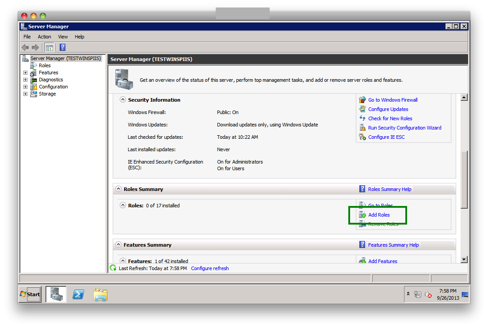
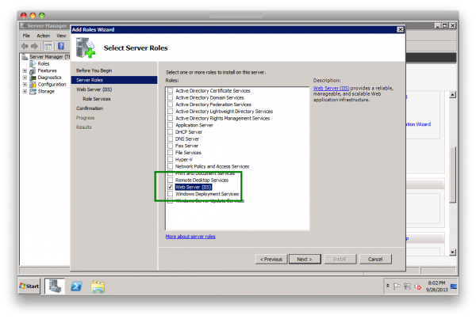
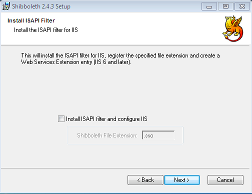

OXD#
oxd is a mediator, a service demon that listens on localhost, providing easy APIs that can be called by a web application to simplify using an external OAuth2 server for authentication or authorization. oxd is not a proxy--sometimes it makes API calls on behalf of an application, but other times it just forms the right URLs and returns them to the application.
One significant advantage of using oxd over a native client library is that oxd consolidates the OAuth2 code in one package. If there are updates to the OAuth2 client code, you can update the oxd-server package, without changing the interface to the application.
Documentation#
The complete documentation for oxd is made available in a separate address. Please see this link for the OXD documentation.
OpenID Connect RP in CentOS#
Basic Web Server Installation#
Before you can install mod_auth_openidc, you need to have an Apache HTTPD server running with SSL enabled.
Apache Web Server#
It is assumed that all the hostnames will be dns resolvable. If not,
then add the entries in /etc/hosts file on both the web server
and Gluu Server.
If you don't have the Apache HTTPD server installed, use apt-get to install the Ubuntu standard distribution:
# apt-get install apache2
# service apache2 start
SSL Configuration#
The SSL Module is necessary for the Apache OpenID Connect Module. Please
use the following commands to activate the ssl module.
# a2enmod ssl
The next step is to create a self-signed SSL Certificate.
- Create a directory to put the generate the ssl certificate
# mkdir /etc/apache2/ssl`
# openssl req -x509 -nodes -days 365 -newkey rsa:2048 -keyout /etc/apache2/ssl/apache.key -out /etc/apache2/ssl/apache.crt
- Answer the questions that are asked. A template is given below
Country Name (2 letter code) [AU]:US
State or Province Name (full name) [Some-State]:TX
Organization Name (eg, company) [Internet Widgits Pty Ltd]:Acme Inc.
Organizational Unit Name (eg, section) []:
Common Name (e.g. server FQDN or YOUR name) []:www.mydomain.com
Email Address []:help@mydomain.com
Configure Apache to use SSL#
This section will guide you through the steps to configure apache to use the SSL module
- Open the
default-ssl.conffile
# vim /etc/apache2/sites-available/default-ssl.conf`
-
Update the certificate locations with the newly created certificates
/etc/apache2/ssl/apache.keyand/etc/apache2/ssl/apache.crt -
Activate the SSL Virtual Host and CGI
# a2ensite default-ssl.conf
# a2enmod cgid
# service apache2 restart
At this point, its a good time to test to make sure SSL and CGI are working. Point your browser at https://www.mydomain.com/cgi-bin/printHeaders.cgi You should see a list of current environment variables.
Configuration of mod_auth_openidc#
Installation#
mod_auth_openidc module depends on the Ubuntu package libjansson4:
# apt-get install libjansson
You'll also need the mod_auth_openidc and libjose packages which can be downloaded from the Releases Page.
For example, at this time the current release is 2.1.3, so the command would be:
# wget https://github.com/pingidentity/mod_auth_openidc/releases/download/v2.1.3/libcjose_0.4.1-1ubuntu1.trusty.1_amd64.deb
# wget https://github.com/pingidentity/mod_auth_openidc/releases/download/v2.1.3/libapache2-mod-auth-openidc_2.1.3-1ubuntu1.trusty.1_amd64.deb
# dpkg -i libcjose_0.4.1-1ubuntu1.trusty.1_amd64.deb
# dpkg -i libapache2-mod-auth-openidc_2.1.3-1ubuntu1.trusty.1_amd64.deb
Note
Get the latest packages here: https://github.com/pingidentity/mod_auth_openidc/releases
Note, if you like to build from source, you can clone the project at Github Page
Now you can enable the module
# sudo a2enmod auth_openidc
# sudo service apache2 restart
Client Registration#
There are two methods for client registration:
- Dynamic Client Registration
- Manual Client Registration
For this example, let's create the client manually in the Gluu Server. When you add the client, use the following parameters:
Name: mod_auth_openidc
Client Secret: something-sufficiently-unguessable
Application Type: Web
Pre-Authorization: Enabled
login uri: https://www.mydomain.com/callback
Subject Type: Public
Scopes: openid, profile, email
Response Types: code
Make a note of the client_secret (you won't get to see it again)! You'll
also need the client_id for the next step.
Install CGI script#
This cgi-script makes for a good test page!
# vi /usr/lib/cgi-bin/printHeaders.cgi
Then paste in this code
#!/usr/bin/python
import os
d = os.environ
k = d.keys()
k.sort()
print "Content-type: text/html\n\n"
print "<HTML><Head><TITLE>Print Env Variables</TITLE></Head><BODY>"
print "<h1>Environment Variables</H1>"
for item in k:
print "<p><B>%s</B>: %s </p>" % (item, d[item])
print "</BODY></HTML>"
Then you'll need to make the script executable by the Apache2
# chown www-data:www-data /usr/lib/cgi-bin/printHeaders.cgi
# chmod ug+x /usr/lib/cgi-bin/printHeaders.cgi
Configuring the Apache VirtualHost#
You are almost done! You'll need to configure mod_auth_openidc to protect your server.
# vi /etc/apache2/sites-available/default-ssl.conf
Add the following right under <VirtualHost _default_:443>
OIDCProviderMetadataURL https://idp.mydomain.com/.well-known/openid-configuration
OIDCClientID (client-id-you-got-back-when-you-added-the-client)
OIDCClientSecret (your-client-secret)
OIDCRedirectURI https://www.mydomain.com/callback
OIDCResponseType code
OIDCScope "openid profile email"
OIDCSSLValidateServer Off
OIDCCryptoPassphrase (a-random-seed-value)
OIDCPassClaimsAs environment
OIDCClaimPrefix USERINFO_
OIDCPassIDTokenAs payload
<Location "/">
Require valid-user
AuthType openid-connect
</Location>
Then restart Apache to effect the changes
# service apache2 restart
The most confusing part here is the OIDCRedirectURI--don't set this
to a path used by your server. The apache-filter uses the redirect_uri
to process the response from the OpenID Provider (Gluu Server).
Now you're ready to test. Open your web browser, and point it at
https://www.mydomain.com/cgi-bin/printHeaders.py
If you're not logged in already, you should be redirected to
the authentication page. If you are logged in, you should just see
an html page with the REMOTE_USER variable populated. Also
check out the OIDC_id_token_payload and all the claims for
USERINFO_
OpenID Connect RP in CentOS#
Installation#
We assume that all the hostnames will be dns resolvable. If not, then
add the according entries in /etc/hosts, please.
Add EPEL Repository#
Run the following command to Add EPEL Repo.
rpm -ivh http://download.fedoraproject.org/pub/epel/6/x86_64/epel-release-6-8.noarch.rpm
Apache Web Server#
To setup Apache2 SSL, run the following commands:
yum install httpd mod_ssl
yum install curl hiredis jansson
Configure SSL Module#
This section will guide you to create SSL certificates. Use the following commands to crete a directory and generate the certificates.
mkdir /etc/httpd/ssl
openssl req -new -x509 -sha256 -days 365 -nodes -out /etc/httpd/ssl/httpd.pem -keyout /etc/httpd/ssl/httpd.key
You will be prompted to enter some values such as company name, country etc. Please enter them and your certificate will be ready.
The next step is to configure Apache to use the certificates and use the following command to edit the vhost.conf file.
vi /etc/httpd/conf.d/vhost.conf
The important part of the configuration is to enter the path to the created SSL certificates. The example is given below.
Note: Please make sure to use the correct server name in the configuration file.
SSLCertificateFile /etc/httpd/ssl/httpd.pem
SSLCertificateKeyFile /etc/httpd/ssl/httpd.key
ServerAdmin support@gluu.org
ServerName gluu.org
Restart Apache Server and you are done configuring the SSL Module. Use the command below to restart the Apache Server.
service httpd restart
Authentication Module (mod_auth_openidc)#
Run the following command to install the mod_auth_openidc module:
rpm -ivh https://github.com/pingidentity/mod_auth_openidc/releases/download/v1.8.2/mod_auth_openidc-1.8.2-1.el6.x86_64.rpm
Note: If there are any difficulties installing hiredis and jansson,
try to update the package database of your system using the following command:
yum upgrade
Load Authentication Module#
Please make sure that the following shared-object file exists by running the following command:
ls -l /usr/lib64/httpd/modules/mod_auth_openidc.so
Next, create an Apache conf file for loading this module.
echo -e "LoadModule auth_openidc_module modules/mod_auth_openidc.so\nListen 44443" > /etc/httpd/conf.d/mod_auth_openidc.conf
The file /etc/httpd/conf.d/mod_auth_openidc.conf will now contain
these two lines:
LoadModule auth_openidc_module modules/mod_auth_openidc.so
Listen 44443
This Apache mod should now be listening on port 44443. To enable this, start the Apache service (running gluuCE at ce.gluu.org):
service httpd start
Client Registration#
There are two methods for client registration:
- Dynamic Client Registration
- Manual Client Registration
You can use any of the methods to register the client.
Dynamic Client Registration#
For dynamic client registration, we'll name the server: dynamic.gluu.org.
Create a directory named dynamic inside the directory /var/www/html, that is:
mkdir /var/www/html/dynamic
Now, create a file named index.html, and add the following content:
<html>
<title>
Protected URL
</title>
<body>
Nice to see the protected url via Dynamic Registration
</body>
</html>
Create another directory named metadata inside the directory from
above to hold further metadata. Then, change the ownership of this
directory using this command:
chown -R apache:apache /var/www/html
Let's create the Apache configuration file now. Create a file named
/etc/httpd/conf.d/dynamic.conf with the content as below:
<VirtualHost *:44443>
ServerName dynamic.gluu.org
DocumentRoot /var/www/html
OIDCMetadataDir /var/www/html/metadata
OIDCClientSecret secret
OIDCRedirectURI https://dynamic.gluu.org:44443/dynamic/fake_redirect_uri
OIDCCryptoPassphrase secret
OIDCSSLValidateServer Off
<Location /dynamic/>
AuthType openid-connect
Require valid-user
</Location>
SSLEngine On
SSLCertificateFile /etc/pki/tls/certs/localhost.crt
SSLCertificateKeyFile /etc/pki/tls/private/localhost.key
</VirtualHost>
Here, both certificate and key files already exist on the server. You can use your own, too. Next, enable the site by running the following command, and restart the Apache service as:
ln -s /etc/httpd/sites-available/dynamic.conf
service httpd restart
Now, try to access this page,
and you'll be presented with a discovery page. To access this page,
enter admin@ce.gluu.org.

The usual choice as per present used uris is: admin@ce.gluu.org. Note
that you have to use an existing user at the gluuCE along with an
existing uri. An example is existing_user@your.gluu.ce.server.
After this the oxAuth page from gluuCE is displayed where you enter the credentials for authentication.

Manual Client Registration#
Considering the manual client registration case, we will name the
server static.gluu.org, instead.
Create a directory named /var/www/html/static, i. e. with this
command:
mkdir /var/www/html/static
Now, let's create another file named index.html with this content:
<html>
<title>
Protected URL
</title>
<body>
Nice to see the protected url via Manual registration
</body>
</html>
Then, change the ownerships by using this command:
chown -R apache:apache /var/www/html
Create a file named /etc/httpd/conf.d/static.conf with the contents as
below:
<VirtualHost *:44443>
ServerName static.gluu.org
DocumentRoot /var/www/html
OIDCRedirectURI https://static.gluu.org:44443/static/fake_redirect_uri
OIDCCryptoPassphrase newsecret
OIDCProviderMetadataURL https://ce.gluu.org/.well-known/openid-configuration
OIDCClientID @!C648.9803.5565.E5CB!0001!0DB0.EEDB!0008!7728.5650
OIDCClientSecret newsecret
OIDCResponseType id_token
OIDCProviderTokenEndpointAuth client_secret_basic
OIDCProviderIssuer https://ce.gluu.org
OIDCSSLValidateServer Off
<Location /static/>
AuthType openid-connect
Require valid-user
</Location>
SSLEngine On
SSLCertificateFile /etc/httpd/ssl/httpd.pem
SSLCertificateKeyFile /etc/httpd/ssl/httpd.key
</VirtualHost>
Instead of pre-existing cert and key files, feel free to use your own. Next, enable the static site by running the following command, and restart the Apache service as below:
ln -s /etc/httpd/sites-available/sites-available/static.conf
service httpd restart
Now, try to access this page, and you should see the oxAuth page from gluuCE where you enter the credentials for authentication.
Chances are there that you'll see this error after logging in:
Error:
The OpenID Connect Provider returned an error: Error in handling response type.
The according Apache log looks like that:
[Fri Jun 05 14:48:28 2015] [error] [client 124.253.60.123] oidc_proto_validate_idtoken: id_token JSON payload did not contain the required-by-spec "sub" string value, referer: https://static.gluu.org:44443/static/fake_redirect_uri
[Fri Jun 05 14:48:28 2015] [error] [client 124.253.60.123] oidc_proto_parse_idtoken: id_token payload could not be validated, aborting, referer: https://static.gluu.org:44443/static/fake_redirect_uri
To solve this problem, log into the gluuCE server by running the following command:
service gluu-server login
Getting DN from Client ID#
We get the client id from the search performed in Gluu Server's Web UI.
So, to get the DN part we perform the below command. The LDAP password
can be stored in /root/.pw or at any other location that is convenient
for you. In our case the command is:
/opt/opendj/bin/ldapsearch -T -X -Z -p 1636 -D "cn=Directory Manager" -j /root/.pw -s sub -b "o=gluu" 'inum=@!C648.9803.5565.E5CB!0001!0DB0.EEDB!0008!7728.5650'
Create a file named mod.ldif with the contents given below. The DN
part to be used in mod.ldif is obtained from output of the command
above:
dn: inum=@!C648.9803.5565.E5CB!0001!0DB0.EEDB!0008!7728.5650,ou=clients,o=@!C648.9803.5565.E5CB!0001!0DB0.EEDB,o=gluu
changetype: modify
add: oxAuthSubjectIdentifier
oxAuthSubjectIdentifier: @!C648.9803.5565.E5CB!0001!0DB0.EEDB!0008!7728.5650
Then, run the ldapmodify command to insert the
oxAuthSubjectIdentifier as below:
/opt/opendj/bin/ldapmodify -Z -X -h localhost -p 1636 -D "cn=Directory Manager" -j /root/.pw -f /root/mod.ldif
The command may vary depending upon your installation. Next, access
this page or <hostname>:4443/static, and the success
message should be visible.
oxRay#
LifeRay OpenID Connect plugin to authenticate users using Gluu IdP.
Overview#
The oxAuth LifeRay plugin is used to authenticate and auto-log users from Gluu Server into LifeRay with the same credentials. It is built on top of oxAuth, the OpenID Connect provider by Gluu.
The oxAuth plugin intercepts any attempt to login from anywhere in the LifeRay and redirects the request and the user to an oxAuth server where the identification takes place, actually. If the user has authorized the server to share some of his basic information with the oxAuth plugin, the user will be redirected back to the LifeRay CMS, and logged in, automatically.
The goal of this project is to use the LifeRay CMS as the basis for an organizational personal data store service.
Note: This plugin does not support auto-user creation from information supplied by the oxAuth Plugin. Instead, it can be implemented by extending the plugin.
Deployment#
The plugin is provided in two variants--Maven and Ant. You can either use Maven or the LifeRay plugin SDK to build and deploy this plugin as a standard LifeRay hot deployable WAR file.
Deploying WAR file using Maven#
This requires a prerequisite: make sure that you have Maven installed on your system to build this plugin from source.
-
Checkout the Maven source from the [oxRay Repository][https://github.com/GluuFederation/oxRay/tree/master/6.2.x/maven/gluu-openid-connect-hook].
-
Open the file
pom.xmlingluu-openid-connect-hook, and update your local LifeRay Tomcat bundle path. This is required for building the WAR file and deploying to the LifeRay Tomcat bundle.
- Run the following command in the
gluu/6.2.x/maven/gluu-openid-connect-hookdirectory:
mvn clean install package liferay:deploy
This will take a few seconds to download the dependency jar files, and
generate the LifeRay-compiled deployable WAR file. It will be placed
within your <liferay-bundle-folder>/deploy directory, and the hot
deployable process will start.
Using LifeRay Plugin SDK With Ant#
This requires a prerequisite: we assume that you have the plugin SDK both installed and configured with LifeRay bundle.
-
Checkout the gluu-openid-connect-hook plugin source from the repository, and place these files in your local directory for the plugin SDK. Usually, this is
liferay-plugins-sdk-6.2.0-ce-ga1/hooks. -
Run the following command in the folder
liferay-plugins-sdk-6.2.0-ce-ga1/hooks/gluu-openid-connect-hook:
ant clean deploy
Using Binary From Repository#
You can also download a compiled binary as a standard LifeRay deployable WAR file from the following location:
oxRay LifeRay Deployable War File
Copy this WAR file in your LifeRay bundle. Usually, this is located at
liferay-portal-6.2.0-ce-ga1/deploy.
Once the plugin is deployed as a WAR file either using Maven or Ant, you will see the following success message in your LifeRay Tomcat server:
Client Registration#
A LifeRay application needs to be registered with the Authorization server before initiating an authentication request/response with OAuth IdP server.
The following steps are necessary to obtain both a client id and a client secret. These data will be used within the LifeRay portal properties.
- Go to the location
https://seed.gluu.org/oxauth-rp/home.seam. - You will see the Dynamic Client Registration Section.
- Enter the Registration Endpoint uri, for example
https://idp.example.org/oxauth/seam/resource/restv1/oxauth/authorize.- You can derive this uri from your IdP auto-discovery uri which is
like that:
https://<Your IDP Server Domain>/.well-known/openid-configuration. - You can search for the registration endpoint, and copy that uri here.
- You can derive this uri from your IdP auto-discovery uri which is
like that:
- Enter the redirect uris as
http://localhost:8080/openidconnect/callback:- Replace your domain name with
localhost:8080 - This will be your LifeRay handler for logging a user into LifeRay, automatically, when a redirect comes back from the OAuth server.
- Replace your domain name with
- Select the Response Types: CODE
- Select the Application Type: WEB
- For development purposes use: NATIVE (if you are testing on a local
machine with
localhost:8080domain) - Enter Client Name: LifeRay App (you can choose any name here).
- All other options can be left as they are--please see the attached screenshot:
- Click
Submit, and both the followingRegistration RequestandRegistration Responsewill be displayed:
- Save the Registration Response to your local system. The parameters
client_idandclient_secretare used in LifeRay when configuringportal-ext.properties.
Modifying portal.properties#
It is necessary to modify portal-ext.properties file to reflect oxAuth
server client credentials and server's URL. It can be accomplished by
navigating into the liferay-portal-6.2.0-ce-ga1 folder, where the file
portal-ext.properties is stored.
Note
To either activate or deactivate the oxAuth plugin put the value
true (to activate) or false (to deactivate), respectively.
gluu.openidconnect.auth.enabled=true
- oxAuth client ID and client secret:
gluu.openidconnect.client.id=@!1111!0008!51CE.1E59
gluu.openidconnect.client.secret=65777eb7-87a8-4d60-9dbc-d31d43971f2b
- OAuth server domain
gluu.openidconnect.idp.domain=https://idp.gluu.org`
- OAuth server auto discovery uri
gluu.openidconnect.url.discovery=https://idp.gluu.org/.well-known/openid-configuration
- Your OAuth server logout uri (typically, this will be used to logout a user from OAuth when a user logs out from LifeRay)
gluu.openidconnect.idp.logout=https://idp.gluu.org/identity/logout
- LifeRay server callback uri that will be used as a handling response by the OAuth server after authentication:
- replace the
localhost:8080with your LifeRay domain name:
gluu.openidconnect.client.redirect.url=http://localhost:8080/openidconnect/callback
This page will be invoked when the user does not exist in the
LifeRay database, but gets authenticated from the OAuth Server.
- Typically, create a LifeRay page with the name
/no-such-user-found, or redirect to the LifeRay registration page uri like that:
gluu.openidconnect.no.such.user.redirect.url=http://localhost:8080/no-such-user-found
Restart the LifeRay server after editing the file
portal-ext.properties.
Login Using the LifeRay Front End#
-
Server Bootup
- Once the LifeRay server is restarted, open your browser and
navigate to the uri
http://localhost:8080.
- Once the LifeRay server is restarted, open your browser and
navigate to the uri
-
Login uri
- Once the LifeRay page successfully loaded navigate to the OpenID
connect page at
http://localhost:8080/openidconnect/login.
- Once the LifeRay page successfully loaded navigate to the OpenID
connect page at
Note: you can edit the theme code, and link to the login uri as
http://localhost:8080/openidconnect/login. In result the user will
always redirect to the OAuth server for authentication.
- OAuth authentication
- The LifeRay login uri will redirect users to the OAuth IdP server for user authentication. Internally, passing the oAuth client id as the following screen:
- Request for permission
- This screen can be configured depending upon your OAuth Server implementation.
- OAuth callback (user auto-login to LifeRay)
- After a successful authentication with the OAuth server, IdP will send a callback to LifeRay with a specific code as a parameter:
http://localhost:8080/openidconnect/callback?code=xxx`
This will be intercepted by our oxAuth LifeRay plugin. Upon validation of the token with the Gluu IdP, it will result in a login of the user to the LifeRay. The user will be redirected to his respective start page.
OpenID Connect Authentication Java#
Using OpenID Connect to authenticate a person in Java#
The OpenID Connect Protocol offers Java developers a way to authenticate a person at any Internet domain that supports the standard. To accomplish this, the domain must provide a way to register clients--the website and mobile applications that use the authentication API offered by the domain.
Discovery#
Discovery is the first step! Luckily, its super-easy! All you have to
do is make a get request to
https://{domain}/.well-known/openid-configuration.
This will return a JSON object, as described in the specification. For example, you can see Gluu's OpenID Connect discovery url.
This will tell you everything you need to know about this OpenID Connect provider, like what are the endpoints (URLs), what crypto is supported, and what user claims can you ask for.
An example of a Discovery Request, using the oxAuth RP library.
Client Registration#
In SAML, the website was called a "Service Provider." In OpenID Connect, the website (or mobile application) is called a "Client". Clients can be registered manually by the OP, but more frequently, clients use the Dynamic Registration API to automate the process.
Obtaining the id_token#
After your client is registered, it is time to get down to business. OpenID Connect offers two common workflows for authentication: basic (where the person is using a browser, and can be re-directed) and implicit where the client sends the credentials, including the secret. There is a useful implements guide for basic and implicit.
Logout#
OpenID Connect defines a mechanism for Session Management. The idea is that JavaScript in a web tab can detect that another tab has logged out. One detection of a logout event, the Web application can cleanup sessions in any backend systems as necessary. It is not 100% effective. If the tab is closed when the logout occurs in another tab, the event may not be detected, and the backend systems are advised to timeout sessions.
Using OpenID Connect from JavaScript#
See OpenID Connect plugin for Passport for further details.
Apache SAML#
Configuring Apache Shibboleth SP in CentOS#
System Preparation#
Add Shibboleth repository for CentOS
- The file
shib.repocontains the following entry:
[security_shibboleth]
name=Shibboleth (CentOS_CentOS-6)
type=rpm-md
baseurl=http://download.opensuse.org/repositories/security:/shibboleth/CentOS_CentOS-6/
gpgcheck=1
gpgkey=http://download.opensuse.org/repositories/security:/shibboleth/CentOS_CentOS-6/repodata/repomd.xml.key
enabled=1
- Download the Shibboleth security repo key from here:
http://download.opensuse.org/repositories/security:/shibboleth/CentOS_CentOS-6/security:shibboleth.repo
Shibboleth SP Installation#
To install the Shibboleth SP, run the following commands in a terminal:
# yum install shibboleth
# service shibd start
# chkconfig shibd on
Install and Configure httpd#
Installation#
The following commands will both install, and start the Apache web server on your machine/Linux environment:
# yum install httpd
# service httpd start
# service iptables stop
Configuration#
Edit the file httpd.conf, and do the following changes:
-
Change the
ServerNamedirective to the server name of the SP. -
Set
UseCanonicalName On. -
Restart the httpd service using the command
service httpd restart.
Httpd Testing#
-
Create an
index.htmlfile inside the directory/var/www/html. -
Restart the httpd service using the command
service httpd restart. -
Check from your browser if the file
index.htmlis visible.
SP Key Certificate#
-
Create both a private key, and a certificate, and place those in the file
/etc/shibboleth. -
Change the permissions of these files so that the web server can read the files.
Shibboleth SP Configuration#
This section describes how to configure the file shibboleth2.xml.
-
Provide the
entityIDof the according SP in:<ApplicationDefaults entityID="http://sp.example.org/Shibboleth"> section
-
Provide the
entityIDof the IdP in:<SSO entityID="https://idp.gluu.org/idp/shibboleth"> section
-
Adjust the entry of the metadata provider. In most cases this is the Gluu IdP metadata link:
<MetadataProvider type="XML" uri="https://idp.gluu.org/idp/shibboleth"> section
-
Provide both the key and certificate of the SP in:
<CredentialResolver type="File" key="spkey.key" certificate="spcrt.crt"> section
Shibboleth Manual Configuration (one Physical SP):#
-
Create a directory named under
/var/www/secure. -
Change the permissions for that directory
securetoapache:apache(owner and group of the web server). -
httpd.conf-
change the ServerName
<hostname_of_server> -
Define the Location, and the authorization type:
<Location /secure> AuthType shibboleth ShibRequestSetting requireSession 1 ShibUseHeaders on Require valid-user </Location>
-
-
configure
shibboleth2.xml-
Set the EntityID of the SP:
ApplicationDefaults entityID="http://hostname/secure" -
Provide the EntityID of the IDP:
SSO entityID="https://idp.gluu.org/idp/shibboleth" -
Set both the Metadata Provider, and the IDP:
MetadataProvider type="XML" uri="https://idp.gluu.org/idp/shibboleth"
-
-
Restart both shibd and Apache2 using these lines:
service shibd restart
service httpd restart
- Create a Trust Relationship for this SP in your desired IdP.
Super Quick Ubuntu Shib Apache Install#
Need to protect a test Apache folder using SAML on an Ubuntu server?
Hate to read? This article is for you. Replace both minnow and
minnow.gluu.info with your desired website hostname.
Configure Apache#
These are the steps to configure your Apache webserver properly:
# apt-get install apache2 libshibsp6 libapache2-mod-shib2
# a2enmod cgi
# a2enmod ssl
# a2enmod shib2
# a2ensite default-ssl
# mkdir /etc/certs
# cd /etc/certs
# openssl genrsa -des3 -out minnow.key 2048
# openssl rsa -in minnow.key -out minnow.key.insecure
# mv minnow.key.insecure minnow.key
# openssl req -new -key minnow.key -out minnow.csr
# openssl x509 -req -days 365 -in minnow.csr -signkey minnow.key -out minnow.crt
# shib-metagen -c /etc/certs/minnow.crt -h minnow.gluu.info > /etc/shibboleth/minnow-metadata.xml
# service apache2 start
# service shibd start
Download minnow-metadata.xml to your machine. You will need this file
later when you create the Trust Relationship in the Gluu Server.
# mkdir /var/www/protected
# touch /var/www/protected/printHeaders.py
# chmod ugo+x /var/www/protected/printHeaders.py
Edit printHeaders.py, and add this simple script. It will show you the
HTTP headers:
#!/usr/bin/python
import os
d = os.environ
k = d.keys()
k.sort()
print "Content-type: text/html\n\n"
print "<HTML><HEAD><TITLE>Print Env Variables</TITLE></Head><BODY>"
print "<h1>Environment Variables</H1>"
for item in k:
print "<p><B>%s</B>: %s </p>" % (item, d[item])
print "</BODY></HTML>"
Edit the default site at /etc/apache2/sites-available/default-ssl.conf,
and add this part:
ScriptAlias /protected/ /var/www/protected/
<Directory /var/www/protected>
AddHandler cgi-script .py
Options +ExecCGI
SSLOptions +StdEnvVars
AuthType shibboleth
ShibRequestSetting requireSession 1
Require valid-user
</Directory>
Configure the Shibboleth SP#
Use this for shibboleth2.xml and replace squid.gluu.info with the
hostname of your SP, and albacore.gluu.info with the hostname of your
IDP.
<SPConfig xmlns="urn:mace:shibboleth:2.0:native:sp:config"
xmlns:conf="urn:mace:shibboleth:2.0:native:sp:config"
xmlns:saml="urn:oasis:names:tc:SAML:2.0:assertion"
xmlns:samlp="urn:oasis:names:tc:SAML:2.0:protocol"
xmlns:md="urn:oasis:names:tc:SAML:2.0:metadata"
logger="syslog.logger" clockSkew="180">
<OutOfProcess logger="shibd.logger"></OutOfProcess>
<UnixListener address="shibd.sock"/>
<StorageService type="Memory" id="mem" cleanupInterval="900"/>
<SessionCache type="StorageService" StorageService="mem" cacheAssertions="false"
cacheAllowance="900" inprocTimeout="900" cleanupInterval="900"/>
<ReplayCache StorageService="mem"/>
<RequestMapper type="Native">
<RequestMap>
<Host name="squid.gluu.info">
<Path name="protected" authType="shibboleth" requireSession="true"/>
</Host>
</RequestMap>
</RequestMapper>
<ApplicationDefaults entityID="https://squid.gluu.info/shibboleth"
REMOTE_USER="uid"
metadataAttributePrefix="Meta-"
sessionHook="/Shibboleth.sso/AttrChecker"
signing="false" encryption="false">
<Sessions lifetime="28800" timeout="3600" checkAddress="true"
handlerURL="/Shibboleth.sso" handlerSSL="true" cookieProps="https" relayState="ss:mem">
<SessionInitiator type="Chaining" Location="/Login" isDefault="true" id="Login"
entityID="https://albacore.gluu.info/idp/shibboleth">
<SessionInitiator type="SAML2" template="bindingTemplate.html"/>
</SessionInitiator>
<md:AssertionConsumerService Location="/SAML2/POST-SimpleSign" index="2"
Binding="urn:oasis:names:tc:SAML:2.0:bindings:HTTP-POST-SimpleSign"/>
<md:AssertionConsumerService Location="/SAML2/POST" index="1"
Binding="urn:oasis:names:tc:SAML:2.0:bindings:HTTP-POST"/>
<LogoutInitiator type="Chaining" Location="/Logout">
<LogoutInitiator type="SAML2" template="bindingTemplate.html"/>
<LogoutInitiator type="Local"/>
</LogoutInitiator>
<md:SingleLogoutService Location="/SLO/Redirect" conf:template="bindingTemplate.html"
Binding="urn:oasis:names:tc:SAML:2.0:bindings:HTTP-Redirect"/>
<md:SingleLogoutService Location="/SLO/POST" conf:template="bindingTemplate.html"
Binding="urn:oasis:names:tc:SAML:2.0:bindings:HTTP-POST"/>
<Handler type="Status" Location="/Status"/>
<Handler type="Session" Location="/Session" showAttributeValues="false"/>
<Handler type="AttributeChecker" Location="/AttrChecker" template="attrChecker.html"
attributes="uid" flushSession="true"/>
</Sessions>
<Errors supportContact="root@localhost"
helpLocation="/about.html"
styleSheet="/shibboleth-sp/main.css"/>
<MetadataProvider type="XML" file="albacore.xml"/>
<TrustEngine type="ExplicitKey"/>
<TrustEngine type="PKIX"/>
<AttributeExtractor type="XML" validate="true" reloadChanges="false" path="attribute-map.xml"/>
<AttributeExtractor type="Metadata" errorURL="errorURL" DisplayName="displayName"/>
<AttributeResolver type="Query" subjectMatch="true"/>
<AttributeFilter type="XML" validate="true" path="attribute-policy.xml"/>
<CredentialResolver type="File" key="/etc/certs/squid.key" certificate="/etc/certs/squid.crt"/>
</ApplicationDefaults>
<SecurityPolicyProvider type="XML" validate="true" path="security-policy.xml"/>
<ProtocolProvider type="XML" validate="true" reloadChanges="false" path="protocols.xml"/>
</SPConfig>
Copy this file into /etc/shibboleth/attribute-map.xml:
<Attributes xmlns="urn:mace:shibboleth:2.0:attribute-map" xmlns:xsi="http://www.w3.org/2001/XMLSchema-instance">
<Attribute name="urn:oid:2.5.4.42" id="givenName"/>
<Attribute name="urn:oid:2.5.4.4" id="sn"/>
<Attribute name="urn:oid:2.16.840.1.113730.3.1.241" id="displayName"/>
<Attribute name="urn:oid:0.9.2342.19200300.100.1.1" id="uid"/>
</Attributes>
Now you need to create a Trust Relationship in your Gluu Server. Login, go to SAML / Trust Relationships, and "Add Relationship":
Then, configure for SAML2SSO profile. Click on the checkbox to "Configure specific RelyingParty":
Then, click to add the SAML2SSO profile:
Then "Save" and "Update." Wait 5 minutes for the Shibboleth IDP to detect reload the metadata or stop and start tomcat.
Test#
Test the CGI script at https://minnow.gluu.info/protected/printHeaders.py.
Enter both the valid username and password (like admin and your
initial admin password). The output will contain something like this:
**Environment Variables**
AUTH_TYPE: shibboleth
CONTEXT_DOCUMENT_ROOT: /var/www/protected/
CONTEXT_PREFIX: /protected/
DOCUMENT_ROOT: /var/www/html
GATEWAY_INTERFACE: CGI/1.1
HTTPS: on
HTTP_ACCEPT: text/html,application/xhtml+xml,application/xml;q=0.9,image/webp,*/*;q=0.8
HTTP_ACCEPT_ENCODING: gzip, deflate, sdch
HTTP_ACCEPT_LANGUAGE: en-US,en;q=0.8
HTTP_CONNECTION: keep-alive
HTTP_COOKIE: _shibsession_64656661756c7468747470733a2f2f6d696e6e6f772e676c75752e696e666f2f73686962626f6c657468=_6aab7e287072bcc123989d8bf5f0ed5e
HTTP_DNT: 1
HTTP_HOST: minnow.gluu.info
HTTP_UPGRADE_INSECURE_REQUESTS: 1
HTTP_USER_AGENT: Mozilla/5.0 (Windows NT 6.1; WOW64) AppleWebKit/537.36 (KHTML, like Gecko) Chrome/45.0.2454.85 Safari/537.36
PATH: /usr/local/sbin:/usr/local/bin:/usr/sbin:/usr/bin:/sbin:/bin
QUERY_STRING:
REMOTE_ADDR: 192.168.88.1
REMOTE_PORT: 52140
REMOTE_USER: mike
REQUEST_METHOD: GET
REQUEST_SCHEME: https
REQUEST_URI: /protected/printHeaders.py
SCRIPT_FILENAME: /var/www/protected/printHeaders.py
SCRIPT_NAME: /protected/printHeaders.py
SERVER_ADDR: 192.168.88.133
SERVER_ADMIN: webmaster@localhost
SERVER_NAME: minnow.gluu.info
SERVER_PORT: 443
SERVER_PROTOCOL: HTTP/1.1
SERVER_SIGNATURE:
Apache/2.4.7 (Ubuntu) Server at minnow.gluu.info Port 443
SERVER_SOFTWARE: Apache/2.4.7 (Ubuntu)
SHIB_Shib_Application_ID: default
SHIB_Shib_Authentication_Instant: 2015-09-17T01:13:23.278Z
SHIB_Shib_Authentication_Method: urn:oasis:names:tc:SAML:2.0:ac:classes:PasswordProtectedTransport
SHIB_Shib_AuthnContext_Class: urn:oasis:names:tc:SAML:2.0:ac:classes:PasswordProtectedTransport
SHIB_Shib_Identity_Provider: https://brookie.gluu.info/idp/shibboleth
SHIB_Shib_Session_ID: _6aab7e287072bcc123989d8bf5f0ed5e
SHIB_Shib_Session_Index: _40e4b17668a13e0d406e41cc9f6bf116
SHIB_displayName: Mike Schwartz
SHIB_givenName: Michael
SHIB_mail: mike@gmail.com
SHIB_sn: Schwartz
SHIB_uid: mike
SSL_CIPHER: ECDHE-RSA-AES128-GCM-SHA256
SSL_CIPHER_ALGKEYSIZE: 128
SSL_CIPHER_EXPORT: false
SSL_CIPHER_USEKEYSIZE: 128
SSL_CLIENT_VERIFY: NONE
SSL_COMPRESS_METHOD: NULL
SSL_PROTOCOL: TLSv1.2
SSL_SECURE_RENEG: true
SSL_SERVER_A_KEY: rsaEncryption
SSL_SERVER_A_SIG: sha256WithRSAEncryption
SSL_SERVER_I_DN: emailAddress=mike@gluu.org,CN=minnow.gluu.info,O=Gluu,L=Austin,ST=TX,C=US
SSL_SERVER_I_DN_C: US
SSL_SERVER_I_DN_CN: minnow.gluu.info
SSL_SERVER_I_DN_Email: mike@gmail.com
SSL_SERVER_I_DN_L: Austin
SSL_SERVER_I_DN_O: Gluu
SSL_SERVER_I_DN_ST: TX
SSL_SERVER_M_SERIAL: 9F5E4F891590BB53
SSL_SERVER_M_VERSION: 1
SSL_SERVER_S_DN: emailAddress=mike@gluu.org,CN=minnow.gluu.info,O=Gluu,L=Austin,ST=TX,C=US
SSL_SERVER_S_DN_C: US
SSL_SERVER_S_DN_CN: minnow.gluu.info
SSL_SERVER_S_DN_Email: mike@gmail.com
SSL_SERVER_S_DN_L: Austin
SSL_SERVER_S_DN_O: Gluu
SSL_SERVER_S_DN_ST: TX
SSL_SERVER_V_END: Sep 10 18:46:32 2016 GMT
SSL_SERVER_V_START: Sep 11 18:46:32 2015 GMT
SSL_SESSION_RESUMED: Initial
SSL_TLS_SNI: minnow.gluu.info
SSL_VERSION_INTERFACE: mod_ssl/2.4.7
SSL_VERSION_LIBRARY: OpenSSL/1.0.1f
Troubleshooting#
-
Make sure you update your hosts file on the Gluu Server, Apache server, and your workstation--this won't work with IP addresses, only.
-
Check the Shibboleth log file
/opt/idp/logs/idp-process.logif you don't see the headers or REMOTE_USER environment variables. Also, restart the Apache Tomcat service byservice tomcat restartto make sure the new Shibboleth IDP xml files were loaded. -
Clear the cookies in your web browser for both the Apache site, and the Gluu Server if you are logging in and logging out a lot with lots of server restarts.
IIS SAML Configuration#
IIS Configuration in Windows 7#
-
Start --> Control Panel --> Programs --> "Turn Windows features on or off"
-
Select (i) IIS (ii) Web Management Tools (iii) II6 Management Compatibility (iv) IIS Management Console (v) IIS Management Scripts and Tools (vi) IIS Management Service
-
Select (i) World Wide Web Services (ii) CGI (iii) ISAPI Filters (iv) ISAPI Extensions --> Press OK.

-
Test IIS to see if it is installed in your system with "127.0.0.1" in the web browser. For our test case, we used IIS7.

ISAPI Filter Configuration#
-
Open IIS Manager (Start --> Administrative Tools --> Internet Information Service/IIS Manager)
-
Double click on "ISAPI and CGI Restrictions"
-
Add a new Filter
a. Click Actions --> Add (upper right corner)
b. Select "\opt\shibboleth-sp\lib\shibboleth\isapi_shib.dll"
c. Description: "Shibboleth"
d. Click "Allow" (from the right hand side)

e. Back to IIS Manager --> ISAPI Filters
1. Click "Add" (upper right corner)
2. Filter Name: Shibboleth
3. Executable: "\opt\shibboleth-sp\lib\shibboleth\isapi_shib.dll"
f. SSO file extension mapping
1. Click on "Handler Mapping" from main page

2. Click "Add Script Map" from Action
3. Request Path :".sso"
4. Executable should be pointed to "isapi_shib.dll"

g. Restart IIS
h. Check Status
Check Status by typing in "http://127.0.0.1/Shibboleth.sso/Status" in the web browser. If it displays an XML document, then the Shibboleth SP Installation in Windows IIS7 in complete.

Shibboleth SP Setup in Windows 2008 R2 with IIS7#
- Open up "Server Manager", scroll down and click on "Add Roles".

- Hit "Next"

- Select "Web Server (IIS)", hit "Next"

- Select (i) CGI
(ii) ISAPI Extensions
(iii) ISAPI Filters
(iv) Management Tools
(a) IIS Management Console
(b) IIS Management Scripts and Tools
(c) Management Service
(v) All IIS6 Management Compatibility


- Hit "Next", for the confirmation, check the list of plugins.

- Hit "Install" and Windows 2008 will complete the installation. A confirmation window shall appear which resembles the screenshot below.
7.Test IIS7 setup from the Internet.

Shibboleth SP 2.5.x Setup#
-
Down the Shibboleth SP 2.5.x
-
Start the installation, keep the default path, Select "Install ISAPI modules into IIS", IIS Script Extension must be ".sso" and Hit "Next".
- After the completion of the installation, the system will ask to reboot the system; hit "Yes".

- Test the Shibboleth SP installation from the SP VM using the URL "localhost/Shibboleth.sso/Status" in the address bar of the Web Browser.
Trust Relationship in IdP#
- Create a Trust Relationship for the new SP in the IdP. It is necessary to upload the Public Certificate of the new SP in the IdP. Please note that the CN of the public certificate MUST BE the same as Hostname of the SP. Hit "Add".
- Download the IdP generated configuration files for Shib SP modification.
SP Configuration#
-
The files from the IdP must be placed in the SP Configuration.
-
Before placing them inside the SP Configuration please check
(a) The "spcert.crt" file has the CN same as the SP hostname.
(b) The "spcert.crt" and "spkey.key" has the same md5sum value.
(c) The IdP-metadata is perfectly placed inside the SP Configuration.
(d) The downloaded "shibboleth2.xml" file has values resembling the file content below.
- For testing purpose, we are going to protect a directory named "secure" with the IdP. Create a folder/directory in the IIS Root Directory and restart Shibd and IIS.
SSO Testing#
-
Place the following URL in the web browser: "https://SP_Name/secure"
-
It will redirect the user to the IdP for authentication.
-
After the authentication is complete, the user will be shown the protected page. For this case, the page is the IIS7 index page.
xmlns:md="urn:oasis:names:tc:SAML:2.0:metadata" logger="syslog.logger" clockSkew="180"> <!-- Controls session lifetimes, address checks, cookie handling, and the protocol handlers. You MUST supply an effectively unique handlerURL value for each of your applications. The value can be a relative path, a URL with no hostname (https:///path) or a full URL. The system can compute a relative value based on the virtual host. Using handlerSSL="true" will force the protocol to be https. You should also add a cookieProps setting of "; path=/; secure" in that case. Note that while we default checkAddress to "false", this has a negative impact on the security of the SP. Stealing cookies/sessions is much easier with this disabled. --> <Sessions lifetime="28800" timeout="3600" checkAddress="false" handlerURL="https://SP_HOSTNAME/Shibboleth.sso" handlerSSL="false" exportLocation="http://localhost/Shibboleth.sso/GetAssertion" exportACL="127.0.0.1" idpHistory="false" idpHistoryDays="7" cookieProps="; path=/; secure; httpOnly"> <!-- SessionInitiators handle session requests and relay them to a Discovery page, or to an IdP if possible. Automatic session setup will use the default or first element (or requireSessionWith can specify a specific id to use). --> <!-- Default example directs to a specific IdPs SSO service (favoring SAML 2 over Shib 1). --> <SessionInitiator type="Chaining" Location="/Login" isDefault="true" id="gluu" relayState="cookie" entityID="https://IDP_HOSTNAME/idp/shibboleth"> <SessionInitiator type="SAML2" acsIndex="1" template="bindingTemplate.html"/> <SessionInitiator type="Shib1" acsIndex="5"/> </SessionInitiator> <!-- md:AssertionConsumerService locations handle specific SSO protocol bindings, such as SAML 2.0 POST or SAML 1.1 Artifact. The isDefault and index attributes are used when sessions are initiated to determine how to tell the IdP where and how to return the response. --> <md:AssertionConsumerService Location="/SAML2/POST" index="1" Binding="urn:oasis:names:tc:SAML:2.0:bindings:HTTP-POST"/> <md:AssertionConsumerService Location="/SAML2/POST-SimpleSign" index="2" Binding="urn:oasis:names:tc:SAML:2.0:bindings:HTTP-POST-SimpleSign"/> <md:AssertionConsumerService Location="/SAML2/Artifact" index="3" Binding="urn:oasis:names:tc:SAML:2.0:bindings:HTTP-Artifact"/> <md:AssertionConsumerService Location="/SAML2/ECP" index="4" Binding="urn:oasis:names:tc:SAML:2.0:bindings:PAOS"/> <md:AssertionConsumerService Location="/SAML/POST" index="5" Binding="urn:oasis:names:tc:SAML:1.0:profiles:browser-post"/> <md:AssertionConsumerService Location="/SAML/Artifact" index="6" Binding="urn:oasis:names:tc:SAML:1.0:profiles:artifact-01"/> <!-- LogoutInitiators enable SP-initiated local or global/single logout of sessions. --> <LogoutInitiator type="Chaining" Location="/Logout" relayState="cookie"> <LogoutInitiator type="SAML2" template="bindingTemplate.html"/> <LogoutInitiator type="Local"/> </LogoutInitiator> <!-- md:SingleLogoutService locations handle single logout (SLO) protocol messages. --> <md:SingleLogoutService Location="/SLO/SOAP" Binding="urn:oasis:names:tc:SAML:2.0:bindings:SOAP"/> <md:SingleLogoutService Location="/SLO/Redirect" conf:template="bindingTemplate.html" Binding="urn:oasis:names:tc:SAML:2.0:bindings:HTTP-Redirect"/> <md:SingleLogoutService Location="/SLO/POST" conf:template="bindingTemplate.html" Binding="urn:oasis:names:tc:SAML:2.0:bindings:HTTP-POST"/> <md:SingleLogoutService Location="/SLO/Artifact" conf:template="bindingTemplate.html" Binding="urn:oasis:names:tc:SAML:2.0:bindings:HTTP-Artifact"/> <!-- md:ManageNameIDService locations handle NameID management (NIM) protocol messages. --> <md:ManageNameIDService Location="/NIM/SOAP" Binding="urn:oasis:names:tc:SAML:2.0:bindings:SOAP"/> <md:ManageNameIDService Location="/NIM/Redirect" conf:template="bindingTemplate.html" Binding="urn:oasis:names:tc:SAML:2.0:bindings:HTTP-Redirect"/> <md:ManageNameIDService Location="/NIM/POST" conf:template="bindingTemplate.html" Binding="urn:oasis:names:tc:SAML:2.0:bindings:HTTP-POST"/> <md:ManageNameIDService Location="/NIM/Artifact" conf:template="bindingTemplate.html" Binding="urn:oasis:names:tc:SAML:2.0:bindings:HTTP-Artifact"/> <!-- md:ArtifactResolutionService locations resolve artifacts issued when using the SAML 2.0 HTTP-Artifact binding on outgoing messages, generally uses SOAP. --> <md:ArtifactResolutionService Location="/Artifact/SOAP" index="1" Binding="urn:oasis:names:tc:SAML:2.0:bindings:SOAP"/> <!-- Extension service that generates "approximate" metadata based on SP configuration. --> <Handler type="MetadataGenerator" Location="/Metadata" signing="false"/> <!-- Status reporting service. --> <Handler type="Status" Location="/Status" acl="127.0.0.1"/> <!-- Session diagnostic service. --> <Handler type="Session" Location="/Session" showAttributeValues="false"/> </Sessions> <!-- Allows overriding of error template filenames. You can also add attributes with values that can be plugged into the templates. --> <Errors supportContact="support@gluu.org" logoLocation="/shibboleth-sp/logo.jpg" styleSheet="/shibboleth-sp/main.css"/> <!-- Uncomment and modify to tweak settings for specific IdPs or groups. --> <RelyingParty Name="IDP_HOSTNAME_WITHOUT_HTTP_OR_HTTPS" keyName="IDP_HOSTNAME_WITHOUT_HTTP_OR_HTTPS"/> <!-- Chains together all your metadata sources. --> <MetadataProvider type="Chaining"> <MetadataProvider type="XML" file="C:\opt\shibboleth-sp\etc\shibboleth\idp-metadata.xml"/> </MetadataProvider> <!-- Chain the two built-in trust engines together. --> <TrustEngine type="Chaining"> <TrustEngine type="ExplicitKey"/> <TrustEngine type="PKIX"/> </TrustEngine> <!-- Map to extract attributes from SAML assertions. --> <AttributeExtractor type="XML" validate="true" path="attribute-map.xml"/> <!-- Use a SAML query if no attributes are supplied during SSO. --> <AttributeResolver type="Query" subjectMatch="true"/> <!-- Default filtering policy for recognized attributes, lets other data pass. --> <AttributeFilter type="XML" validate="true" path="attribute-policy.xml"/> <!-- Simple file-based resolver for using a single keypair. --> <!-- <CredentialResolver type="File" key="sp-key.pem" certificate="sp-cert.pem"/> --> <!-- TODO is password needed? --> <CredentialResolver type="File" key="C:\opt\shibboleth-sp\etc\shibboleth\spkey.key" certificate="C:\opt\shibboleth-sp\etc\shibboleth\spcert.crt" /> </ApplicationDefaults> <!-- Each policy defines a set of rules to use to secure messages. --> <SecurityPolicies> <!-- The predefined policy enforces replay/freshness, standard condition processing, and permits signing and client TLS. --> <Policy id="default" validate="false"> <PolicyRule type="MessageFlow" checkReplay="true" expires="60"/> <PolicyRule type="Conditions"> <PolicyRule type="Audience"/> <!-- Enable Delegation rule to permit delegated access. --> <!-- <PolicyRule type="Delegation"/> --> </PolicyRule> <PolicyRule type="ClientCertAuth" errorFatal="true"/> <PolicyRule type="XMLSigning" errorFatal="true"/> <PolicyRule type="SimpleSigning" errorFatal="true"/> </Policy> </SecurityPolicies>
Configuring Apache Shibboleth SP in Windows#
Shibboleth SP Installation#
-
Download the MSI of Shibboleth-SP from: http://www.shibboleth.net/downloads/service-provider/latest/ .
-
Start the installation
-
Define the destination folder (by default it is: C:\opt\shibboleth-sp).

-
Select the Shibboleth Daemon port. By default it is 1600, and you may keep it for testing it, locally.
-
Now, there are two options. According to your target you will have to choose one.
-
Option 1: If you install Shibboleth for the Apache Web Server
-
Option 2: If you install Shibboleth for Microsoft IIS Web Server
a. For the Microsoft IIS Web Server, CHECK "Install ISAPI filter and configure IIS". Remember to put the fie Extension ".sso" is necessary.
b. For the Apache Web Server, UNCHECK "Install ISAPI filter and configure IIS".

-
UAC of Windows 7 may block this program, so allow it.
-
Apache Configuration#
1. Download the Apache HTTP server MSI Installer with OpenSSL:
http://httpd.apache.org/download.cgi#apache22 .

2. Select the destination. You can keep the default destination for your local testing. But, make sure that there is no other "Apache Software Foundation" directory in your current "C:\Program Files\" location.

3. Provide the Server Information. For local testing you can use
`localdomain/localhost`.

4. Test whether the Apache web server is installed or not. Open your web
browser and use `localhost`. If you see something like the image shown
below--you are done!
Shibboleth and Apache Configuration#
- Change the permission of the Apache installation directory, and provide "write" access.
-
httpd.confconfiguration-
Change "ServerName localhost:80" (for your local testing)
-
Copy
apache22.conffrom the Shibboleth directory to~/apache/conf/extra/
-
-
Shibboleth2.xmlconfiguration-
Change: Host name="localhost" (for local testing)
-
Change: entityID="https://localhost/shibboleth" (for local testing)
-
Change: ApplicationOverride id="admin" entityID="https://localhost/shibboleth/"
-
-
Reboot your windows machine.
Test SP Installation with Windows and Apache#
- Open the web browser, and provide the address:
localhost/Shibboleth.sso/Status - If you can see some XML page like the one shown below--you are done with your SP installation in Windows through Apache2.
a